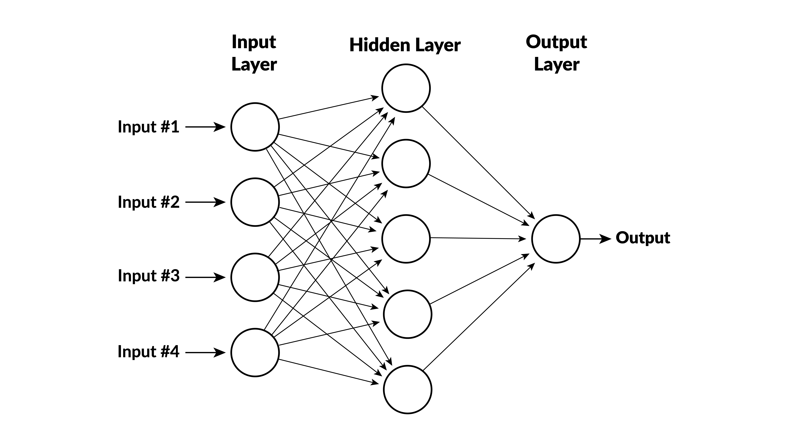

Module 15: Predictive Modeling
MGMT 675: Generative AI for Finance
Course Slides
Click on a topic to view the slide deck.
Generative AI for FinanceSpring 2026
Instructor
Kerry Back
kerryback@gmail.com
J. Howard Creekmore Professor of Finance and Professor of Economics
Meeting Schedule
TTh 12:30 – 2:00
3/17/2026 – 4/23/2026
Special session:
- Saturday, March 21, 9:00-12:00 - optional Python session
All sessions will be in McNair 212, including the special session.
Course Description
The course is about financial applications of generative AI. We will discuss and use current AI tools but also discuss broader concepts of AI and how they relate to finance. The course will be “hands-on.” We will be working in class on laptops each day.
We will use Anthropic’s Claude throughout the course. Anthropic has made a number of important innovations that the rest of the industry has followed, including a protocol for connecting AI to tools (Model Context Protocol), coding agents that can execute terminal commands (Claude Code), and code execution in a virtual machine (Claude Cowork). Claude has also generally led all other models in coding tasks for the past two years. We will also briefly look at ChatGPT, Gemini, and other large language models.
Learning Objectives
- Use AI coding agents (Claude Code) to perform financial analysis, build visualizations, and generate reports
- Apply AI to core finance tasks: portfolio optimization, DCF valuation, and sentiment-based trading signals
- Connect AI to external data and documents via MCP servers, skills, and retrieval-augmented generation
- Automate multi-step financial workflows with reusable skills, reporting pipelines, and AI agents
- Verify and govern AI-generated analysis using red-teaming, audit protocols, and structured review
Grading
Grades will be based on six group assignments (15% each) and peer assessments (10%). Groups can consist of no more than five students. Each assignment consists of multiple exercises and will take a nontrivial amount of time to complete. Do not wait until the last minute to get started.
The assignments are posted on Canvas. An assignment is due each Tuesday at 11:59 pm beginning March 24 and ending April 28 (during exam week).
Claude Accounts
Each student will be reimbursed for a Claude Pro account ($20 per month). The Pro account provides access to Cowork, Claude Code, and the Claude plug-in for Excel.
Slide Decks
Honor Code
The Rice University honor code applies to all work in this course.
Disability Accommodations
Any student with a documented disability requiring accommodations in this course is encouraged to contact me outside of class. All discussions will remain confidential. Any adjustments or accommodations regarding assignments or the final exam must be made in advance. Students with disabilities should also contact Disability Support Services in the Allen Center.
What Is Predictive Modeling?
Use historical data to learn a function \(f\) that maps features \(X\) to a target \(y\).
\[y \approx f(X)\]
Regression
- Target is a continuous number
- Example: predict house prices
- Measure error with MSE, \(R^2\)
Classification
- Target is a category (0 or 1, etc.)
- Example: predict loan default
- Measure with accuracy, AUC
Linear Regression as a Prediction Model
The simplest \(f\): a weighted sum of features.
\[\hat{y} = \beta_0 + \beta_1 x_1 + \beta_2 x_2 + \cdots + \beta_p x_p\]
- Fit by minimizing sum of squared errors on training data
- Fast, interpretable, strong baseline
- Works well when the true relationship is approximately linear
You already know linear regression from statistics. The new idea is to use it as a prediction machine: fit on known data, then predict for new observations.
Linear Regression in scikit-learn
from sklearn.linear_model import LinearRegression
import numpy as np
# X is an n×p array of features, y is an n-vector of targets
model = LinearRegression()
model.fit(X, y)
# Predict for a single new observation (1×p array)
new_obs = np.array([[feature1, feature2, ..., featurep]])
prediction = model.predict(new_obs)
print(f"Predicted value: {prediction[0]:.2f}")Three steps: (1) create the model, (2) fit on data, (3) predict for new inputs. Every scikit-learn model follows this same pattern.
Beyond Linear Models
Categories of Nonlinear Models
Tree-Based
- Decision trees
- Random forests
- Gradient boosting
Neural Networks
- Feedforward nets
- Deep learning
- Transformers (LLMs!)
Kernel Methods
- Support vector machines
- Gaussian processes
Other
- K-nearest neighbors
- Naive Bayes
- Ensemble methods
We’ll focus on gradient boosting — it dominates structured/tabular data tasks and is the most widely used ML method in finance.
What Is Gradient Boosting?
Build a prediction by adding many small decision trees, each one correcting the errors of the previous ensemble.
The Intuition
- Fit a simple tree to the data
- Compute the residuals (errors)
- Fit the next tree to predict the residuals
- Add the new tree’s predictions (scaled down) to the running total
- Repeat for hundreds of rounds
Each tree is weak on its own, but the ensemble is powerful. The “gradient” part means we follow the gradient of the loss function — like gradient descent, but in function space.
Gradient Boosting in scikit-learn
from sklearn.ensemble import GradientBoostingRegressor
model = GradientBoostingRegressor(
n_estimators=500, # number of trees
max_depth=4, # depth of each tree
learning_rate=0.05, # shrinkage factor
)
model.fit(X, y)
prediction = model.predict(new_obs)Same fit / predict interface. The key hyperparameters are the number of trees, depth, and learning rate.
Regression Example: California Housing
The Dataset
Predict median house value for California census block groups.
| Feature | Description |
|---|---|
| MedInc | Median income in block group |
| HouseAge | Median house age |
| AveRooms | Average number of rooms |
| AveBedrms | Average number of bedrooms |
| Population | Block group population |
| AveOccup | Average household size |
| Latitude | Block group latitude |
| Longitude | Block group longitude |
Download: california-housing.csv (20,640 observations)
Load and Inspect
import pandas as pd
df = pd.read_csv("files/california-housing.csv")
X = df.drop(columns="MedHouseVal")
y = df["MedHouseVal"]
print(f"Features: {X.shape[1]}, Observations: {X.shape[0]}")
print(X.describe().round(2))MedHouseVal is the target (in $100,000s). The 8 remaining columns are features.
Fit Both Models
from sklearn.linear_model import LinearRegression
from sklearn.ensemble import GradientBoostingRegressor
# Linear regression
lr = LinearRegression().fit(X, y)
# Gradient boosting
gb = GradientBoostingRegressor(
n_estimators=500, max_depth=4, learning_rate=0.05
).fit(X, y)Predict for a New Observation
import numpy as np
# A hypothetical census block group
new_obs = np.array([[4.5, 30, 5.5, 1.1, 1200, 3.0, 34.0, -118.5]])
lr_pred = lr.predict(new_obs)[0]
gb_pred = gb.predict(new_obs)[0]
print(f"Linear regression: ${lr_pred * 100_000:,.0f}")
print(f"Gradient boosting: ${gb_pred * 100_000:,.0f}")Both models produce a prediction, but which one should we trust? We need a principled way to compare them.
Which Model Is Better?
The Problem with Training Error
If we measure error on the same data we used to fit, a more complex model will always look better.
- It can memorize the training data (overfitting)
- Training error is an optimistic estimate of true prediction quality
- We need to test on data the model has never seen
Train/Test Split
The Solution
- Randomly split the data into training (e.g., 80%) and test (20%) sets
- Fit both models on the training set only
- Evaluate predictions on the held-out test set
- The model with lower test error generalizes better
from sklearn.model_selection import train_test_split
X_train, X_test, y_train, y_test = train_test_split(
X, y, test_size=0.2, random_state=42
)
print(f"Train: {X_train.shape[0]}, Test: {X_test.shape[0]}")Evaluate on the Test Set
from sklearn.metrics import mean_squared_error, r2_score
# Fit on training data
lr = LinearRegression().fit(X_train, y_train)
gb = GradientBoostingRegressor(
n_estimators=500, max_depth=4, learning_rate=0.05
).fit(X_train, y_train)
# Predict on test data
lr_pred = lr.predict(X_test)
gb_pred = gb.predict(X_test)Compare Results
print("Linear Regression:")
print(f" RMSE = {mean_squared_error(y_test, lr_pred, squared=False):.3f}")
print(f" R² = {r2_score(y_test, lr_pred):.3f}")
print()
print("Gradient Boosting:")
print(f" RMSE = {mean_squared_error(y_test, gb_pred, squared=False):.3f}")
print(f" R² = {r2_score(y_test, gb_pred):.3f}")RMSE is in the same units as the target ($100k). \(R^2\) is the fraction of variance explained. Lower RMSE and higher \(R^2\) on the test set = better generalization.
Typical Results
| Metric | Linear Regression | Gradient Boosting |
|---|---|---|
| Test RMSE | ~0.73 | ~0.53 |
| Test \(R^2\) | ~0.58 | ~0.78 |
Gradient boosting captures nonlinear patterns — interactions between location, income, and housing characteristics — that linear regression misses.
Classification
From Regression to Classification
When the target is binary (0 or 1), we need classification models.
Logistic Regression
- Linear model, but outputs a probability via the sigmoid function
- \(P(y=1) = \frac{1}{1 + e^{-(\beta_0 + \beta_1 x_1 + \cdots)}}\)
- Classify as 1 if \(P > 0.5\), else 0
Gradient Boosting Classifier
- Same boosting idea, but optimizes log-loss (cross-entropy)
- Uses softmax to convert raw scores to probabilities
- Handles nonlinear decision boundaries
Logistic Regression in scikit-learn
from sklearn.linear_model import LogisticRegression
model = LogisticRegression(max_iter=10000)
model.fit(X_train, y_train)
# Predict class labels
y_pred = model.predict(X_test)
# Predict probabilities
y_prob = model.predict_proba(X_test)[:, 1] # P(class = 1)Same fit/predict pattern. Use predict_proba to get probabilities instead of hard class labels.
Gradient Boosting for Classification
from sklearn.ensemble import GradientBoostingClassifier
model = GradientBoostingClassifier(
n_estimators=300,
max_depth=3,
learning_rate=0.1,
)
model.fit(X_train, y_train)
y_pred = model.predict(X_test)
y_prob = model.predict_proba(X_test)[:, 1]The classifier version automatically uses log-loss and softmax internally. The API is identical to the regressor.
Classification Example: Breast Cancer
The Dataset
Predict whether a tumor is malignant (0) or benign (1) from cell nucleus measurements.
- 569 observations, 30 features
- Features: radius, texture, perimeter, area, smoothness, etc.
- Each measured as mean, standard error, and worst (largest) value
Download: breast-cancer.csv
This is a classic ML benchmark. In finance, the same methods apply to credit default, fraud detection, and churn prediction.
Load and Split
import pandas as pd
from sklearn.model_selection import train_test_split
df = pd.read_csv("files/breast-cancer.csv")
X = df.drop(columns="target")
y = df["target"]
X_train, X_test, y_train, y_test = train_test_split(
X, y, test_size=0.2, random_state=42
)
print(f"Train: {X_train.shape[0]}, Test: {X_test.shape[0]}")
print(f"Class balance: {y_train.value_counts().to_dict()}")Fit Both Classifiers
from sklearn.linear_model import LogisticRegression
from sklearn.ensemble import GradientBoostingClassifier
# Logistic regression
logit = LogisticRegression(max_iter=10000).fit(X_train, y_train)
# Gradient boosting
gbc = GradientBoostingClassifier(
n_estimators=300, max_depth=3, learning_rate=0.1
).fit(X_train, y_train)Confusion Matrix
A confusion matrix shows counts of correct and incorrect predictions.
from sklearn.metrics import confusion_matrix, ConfusionMatrixDisplay
import matplotlib.pyplot as plt
fig, axes = plt.subplots(1, 2, figsize=(12, 4))
for ax, model, name in [
(axes[0], logit, "Logistic Regression"),
(axes[1], gbc, "Gradient Boosting"),
]:
cm = confusion_matrix(y_test, model.predict(X_test))
ConfusionMatrixDisplay(cm, display_labels=["Malignant", "Benign"]).plot(ax=ax)
ax.set_title(name)
plt.tight_layout()
plt.savefig("files/confusion-matrices.png", dpi=150)
plt.show()Reading a Confusion Matrix
| Predicted Malignant | Predicted Benign | |
|---|---|---|
| Actually Malignant | True Negative | False Positive |
| Actually Benign | False Negative | True Positive |
- False positives: predicted benign but actually malignant (dangerous!)
- False negatives: predicted malignant but actually benign (unnecessary worry)
- Overall accuracy = (TP + TN) / total
ROC Curves and AUC
The ROC curve plots true positive rate vs. false positive rate at every probability threshold.
from sklearn.metrics import roc_curve, auc
import matplotlib.pyplot as plt
fig, ax = plt.subplots(figsize=(7, 6))
for model, name in [(logit, "Logistic Regression"), (gbc, "Gradient Boosting")]:
y_prob = model.predict_proba(X_test)[:, 1]
fpr, tpr, _ = roc_curve(y_test, y_prob)
ax.plot(fpr, tpr, label=f"{name} (AUC = {auc(fpr, tpr):.3f})")
ax.plot([0, 1], [0, 1], "k--", label="Random (AUC = 0.500)")
ax.set_xlabel("False Positive Rate")
ax.set_ylabel("True Positive Rate")
ax.set_title("ROC Curves")
ax.legend()
plt.savefig("files/roc-curves.png", dpi=150)
plt.show()Interpreting AUC
- AUC = 0.5: model is no better than random guessing
- AUC = 1.0: model is perfect
- AUC > 0.9: excellent discrimination
AUC in Finance
- Credit scoring: does the model separate defaults from non-defaults?
- Fraud detection: does it flag fraudulent transactions?
- Higher AUC = more reliable ranking of risky vs. safe cases
Neural Networks
What Is a Neural Network?
A neural network passes inputs through layers of simple functions, each transforming the data before handing it to the next layer.

- Input layer: your raw features (\(x_1, x_2, \ldots, x_p\))
- Hidden layers: neurons that compute weighted sums, then apply a nonlinear function
- Output layer: produces the final prediction
Stacking layers lets the network learn hierarchical patterns — early layers detect simple relationships, later layers combine them into complex ones.
How a Single Neuron Works
Each neuron computes two things:
- A weighted sum of its inputs plus a bias:
\[z = b + w_1 x_1 + w_2 x_2 + \cdots + w_n x_n\]
- An activation function applied to \(z\):
\[h = \text{activation}(z)\]
The weights \(w_i\) and bias \(b\) are the parameters learned during training. Every neuron has its own set.
Activation Functions
The activation function introduces nonlinearity — without it, stacking layers would just be another linear model.
ReLU (hidden layers)
\[h = \max(0,\; z)\]
- Outputs \(z\) if positive, 0 otherwise
- Simple, fast, and effective
- The default choice for hidden layers
Sigmoid (output layer)
\[h = \frac{1}{1 + e^{-z}}\]
- Squashes any value into \((0, 1)\)
- Natural for probabilities
- Used in the output layer for binary classification
Putting It Together
A small network with 2 inputs, one hidden layer of 3 neurons, and 1 output:
Parameter Count
- Hidden layer: each of 3 neurons has 2 weights + 1 bias = 9 parameters
- Output layer: 1 neuron has 3 weights + 1 bias = 4 parameters
- Total: 13 parameters
Real networks have millions or billions of parameters. GPT-4 has over a trillion. But the building block is always the same: weighted sum \(\rightarrow\) activation.
Training a Neural Network
How does the network learn?
- Forward pass — compute predictions from current weights
- Loss — measure how wrong the predictions are (MSE for regression, cross-entropy for classification)
- Backpropagation — compute the gradient of the loss with respect to every weight
- Update — nudge each weight in the direction that reduces the loss
- Repeat for many iterations (epochs)
This is gradient descent, the same optimization idea behind gradient boosting — but applied to the network’s weights rather than to adding trees.
Why Neural Networks Matter
Deep Learning
- Networks with many hidden layers
- Powers image recognition, speech, translation
- Excels when data is unstructured (images, text, audio)
Large Language Models
- ChatGPT, Claude, Gemini are all neural networks
- Trained on vast text corpora
- The “transformer” is a specialized neural network architecture
For tabular data (spreadsheets, databases), gradient boosting usually wins. Neural networks shine when the data is high-dimensional and unstructured.
When to Use What
| Data Type | Best Starting Model |
|---|---|
| Tabular / structured | Gradient boosting |
| Images | Convolutional neural networks |
| Text / documents | Transformers (LLMs) |
| Time series | Both can work; transformers increasingly popular |
| Small datasets (< 1,000 rows) | Linear/logistic regression |
You don’t need to implement neural networks from scratch. The key is knowing when they’re the right tool and being able to interpret the results.
Summary
What We Covered
Regression
- Linear regression baseline
- Gradient boosting for nonlinear patterns
- Evaluate with RMSE and \(R^2\)
Classification
- Logistic regression baseline
- Gradient boosting classifier
- Confusion matrices and AUC
Neural Networks
- Neurons, layers, activations
- Training via backpropagation
- Powers deep learning and LLMs
Key Principle
- Always use a train/test split
- Test error measures generalization
- Match model to data type
The AI Workflow
You don’t need to memorize scikit-learn syntax. The workflow is:
- Describe your prediction problem to Claude
- Provide or point to your data
- Ask Claude to fit models and compare them
- Understand the results and make decisions
AI writes the code. You choose the models, interpret the output, and decide what to do with the predictions.